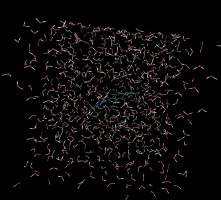
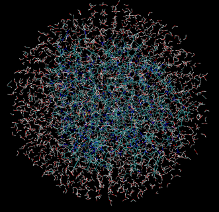
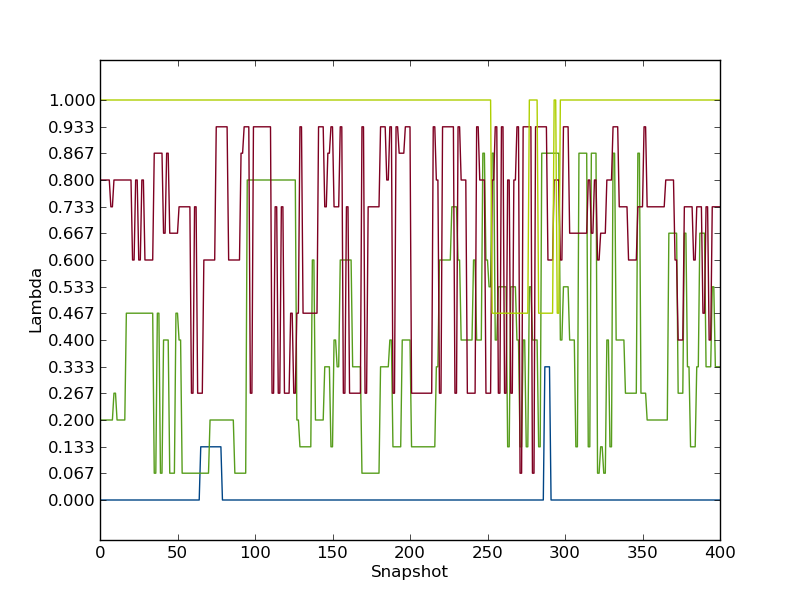
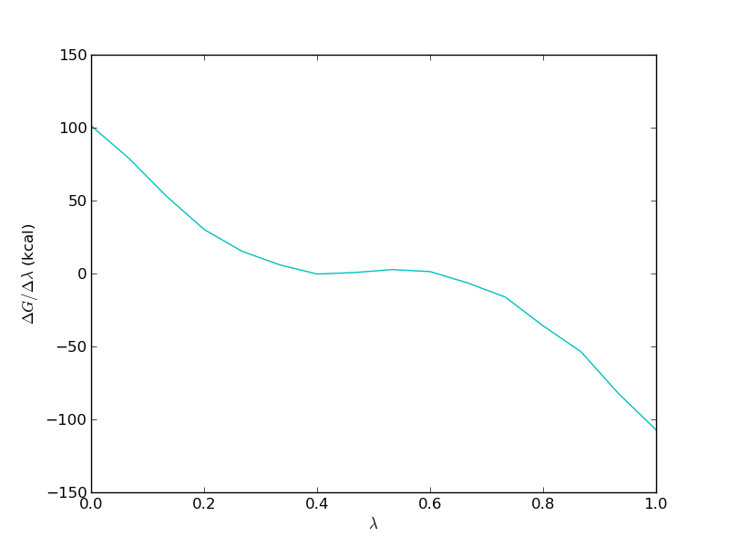

To come back to the tutorial index, click here.
lig1.pdb - the structure of the first ligand molecule in PDB formatlig3.pdb - the structure of the second ligand molecule in PDB formatprotein.pdb - the structure of the COX2 protein in PDB format
python2.7 $PROTOMSHOME/protoms.py -s dualtopology -l lig1.pdb lig3.pdb -p protein.pdb
this sets up one simulation for the bound leg and one for the free leg of the relative free energy cycle.
The simulations will run 5 m equilibration steps and 40 m production steps for each of the 16 λ-values. Output will be printed to files every 100 k moves and Hamiltonian replica-exchanges between neighbouring λ-values will be attempted every 200 k moves.
the -s dualtopology argument tells the script to setup a dual topology free energy simulation and the -p and -l arguments specify the protein and the ligands respectively.
You can read more about the files that the setup script creates further down on this page.
You can visualise the systems that will be simulated with (for instance) VMD:
vmd -m lig1.pdb lig3.pdb lig1_box.pdb vmd -m lig1.pdb lig3.pdb protein_scoop.pdb water.pdb 
mpirun -np 16 $PROTOMSHOME/protoms3 run_bnd.cmd mpirun -np 16 $PROTOMSHOME/protoms3 run_free.cmdThis is most conveniently done on a computer cluster. The calculations will take approximately 48 h to complete.
python2.7 $PROTOMSHOME/tools/calc_series.py -f out_free/lam-0.000/resultsto look at time series for the free leg at λ=0.0. In the wizard that appears you can type
total followed by enter twice. This will plot the total energy as a function of simulation snapshot. It should look something like this:Next, we will analyse how effective the λ replica exchange was. Type
grep "lambda swaps" out_free/lam-0.000/infoand this will give you the overall acceptance ratio of the λ swaps. It should be around 50% for this perturbation, indicating that the overall effectiveness is acceptable. Next, we will look at individual replicas and see how they exchange λ-value throughout the simulation. This can be done with
python2.7 $PROTOMSHOME/tools/calc_replicapath.py -f out_free/lam-*/results -p 0.0 0.2 0.8 1.0 -o replica_path_free.png
to plot the path of the first few λ-values. It should look something like this.

as is clear, these replicas were not able to traverse the full λ-space within the simulation time. Also the replicas starting with λ=1.0 or 0.0 did not exchange very much at all. Hence, the replica exchange was not fully efficient.
Now, we will estimate the free energy. We will do this both with thermodynamic integration, Bennett's acceptance ratio (BAR) and multistate BAR (MBAR). To do this you can type
python2.7 $PROTOMSHOME/tools/calc_dg.py -d out_free/ -s 10
A typical result is between 0 and 1 kcal/mol. Notice that only 10 snapshots are removed from the 400 snapshots when calculating the free energy, because the analysis with calc_series.py indicated that the simulation was equilibrated very much from the start.
It is important to study the gradient of the TI calculation. It should be smooth in order for the TI to work properly. For the free leg it should look something like this

Now, we need to repeat the analysis for the bound leg. You will notice that the equilibration of this simulation is much slower. The computed free energy should be between 6.5 and 7.5 kcal/mol (depending on TI or BAR and how much equilibration is removed).
This gives a relative binding free energy of about -0.5 kcal/mol.
H H H DU
| / | /
Ligand 3 : R-C-C--H ==> R-C-H--DU : Ligand 1
λ=0.0 | \ | \ λ=1.0
H H H DU
To setup this simulation type:
python2.7 $PROTOMSHOME/protoms.py -s singletopology -l lig3.pdb lig1.pdb -p protein.pdb
during the setup you will be prompted to type in the atoms in ligand 1 that correspond to atoms in ligand 3. For C38 you should type H38 and for the 3 methyl hydrogens H43, H41, H42 you can simlply leave the line blank to indicate that they should be perturbed to dummy atoms.
As with dual-topology, this sets up simulations for the bound leg and the free leg of the relative free energy cycle.
The simulations will run 5 m equilibration steps and 40 m production steps for each of the 16 λ-values. Output will be printed to files every 100 k moves and Hamiltonian replica-exchanges between neighbouring λ-values will be attempted every 200 k moves.
mpirun -np 16 $PROTOMSHOME/protoms3 run_comb_bnd.cmd mpirun -np 16 $PROTOMSHOME/protoms3 run_comb_free.cmd mpirun -np 16 $PROTOMSHOME/protoms3 run_comb_gas.cmd
This is most conveniently done on a computer cluster. The calculations will take approximately 48 h to complete.
protoms.py as above, you accept the standard number of λ-values, simulation length etc. The values of these parameters were chosen from experience and should work for most systems. However, there are situations when you may want to do something else. Here, we will go through some of the many available options. To know about other options you have to read the manuals for the tools or the overall MC program. You might also have to set up your system by executing the individual tools separately.
--nequil - this controls the number of equilibration steps--nprod - this controls the number of production steps
python2.7 $PROTOMSHOME/protoms.py -s dualtopology -l lig1.pdb lig3.pdb -p protein.pdb --nequil 10E6 --nprod 50E6
you will run 10 m equiliration steps and 50 m production steps (instead of the 5 m and 40 m that is default)
--lambdas.
by typing for instance
python2.7 $PROTOMSHOME/protoms.py -s dualtopology -l lig1.pdb lig3.pdb -p protein.pdb --lambdas 24
you will initiate 24 λ-values rather than default 16. You can also give individual λ-values to the argument. For instance
python2.7 $PROTOMSHOME/protoms.py -s dualtopology -l lig1.pdb lig3.pdb -p protein.pdb --lambdas 0.000 0.033 0.067 0.133 0.200 0.267 0.333 0.400 0.467 0.533 0.600 0.667 0.733 0.800 0.867 0.933 0.967 1.000
will add two new λ-values at 0.033 and 0.967 to the 16 created by default.
--repeats or just -r.
by typing for instance
python2.7 $PROTOMSHOME/protoms.py -s dualtopology -l lig1.pdb lig3.pdb -p protein.pdb -r 5you will create 5 input files for the bound leg and 5 input files for the free leg. Therefore, you also need to execute ProtoMS 10 times with the different input files. The output will be in 10 different folders, e.g.
out1_bnd and out2_bnd.
lig1.prepi and lig3.prepi = the z-matrix and atom types of the ligands in Amber formatlig1.frcmod and lig3.frcmod = additional parameters not in GAFFlig1.zmat and lig3.zmat = the z-matrix of the ligands used to sample them in the MC simulationlig1.tem and lig3.tem = the complete template (force field) file for the ligands in ProtoMS formatprotein_scoop.pdb = the truncated protein structure
lig1_box.pdb = the box of water solvating ligand 1 in the free leg simulationlig3_box.pdb = the box of water solvating ligand 3, this box will not be usedwater.pdb = the cap of water solvating the protein-ligand system in the bound leg simulationFor the dual-topology simulations the following files are created:
li1-li3.tem = the combined template file for the two ligands, used only in this simulationrun_bnd.cmd = the ProtoMS command file for the bound-leg simulationrun_free.cmd = the ProtoMS command file for the free-leg simulationFor the single-topology simulations the following files are created:
li3tli1_ele.tem = the template file for electrostatic perturbation, used only in this simulationli3tli1_vdw.tem = the template file for van der Waals perturbation, used only in this simulationli3tli1_comb.tem = the template file for one-step (combined) perturbation, used only in this simulationsingle_cmap.dat = the atom correspondence maprun_comb_bnd.cmd, run_ele_bnd.cmd and run_vdw_bnd.cmd = the ProtoMS command files for the bound-leg simulationrun_comb_free.cmd, run_ele_free.cmd and run_vdw_free.cmd = the ProtoMS command file for the free-leg simulationrun_comb_gas.cmd, run_ele_gas.cmd and run_vdw_gas.cmd = the ProtoMS command file for the gas-phase simulation
lambdare 200000 0.000 0.067 0.133 0.200 0.267 0.333 0.400 0.467 0.533 0.600 0.667 0.733 0.800 0.867 0.933 1.000
In the command files for dual-topology simulations, the following lines exist
dualtopology1 1 2 synctrans syncrot softcore1 solute 1 softcore2 solute 2 softcoreparams coul 1 delta 0.2 deltacoul 2.0 power 6 soft66this section, which exists in both input files, sets up the dual topology simulation with appropriate soft-core parameters. It could be worth trying to optimize the soft-core parameters if your simulation is not performing well.
protoms.py
HEADER LI1 and can be added by typing
sed -i "1iHEADER LI1" lig1.pdb
python2.7 $PROTOMSHOME/tools/ambertools.py -f lig1.pdb -n LI1and this will execute the AmberTools programs
antechamber and parmchck, creating the files lig1.prepi and lig1.frcmod, respectively.
python2.7 $PROTOMSHOME/tools/build_template.py -p lig1.prepi -f lig1.frcmod -o lig1.tem -n LI1this will create the files lig1.tem containing the ProtoMS template file and lig1.zmat. It is a good idea to check these files to see if the script has defined the molecule properly.
cat lig1.pdb lig3.pdb > temp.pdband then we will create a water box of TIP4P water molecules around this pdb file. Type
python2.7 $PROTOMSHOME/tools/solvate.py -b $PROTOMSHOME/data/wbox_tip4p.pdb -s temp.pdb -o lig1_box.pdbthis will solvate both ligands using standard settings, i.e. it will be 10 A between the solute and the edge of the box. A pre-equilibrated box of TIP4P water molecules located in
$PROTOMSHOME/data/ is used. The box is written to the file lig1_box.pdb.
We need to combine the template files for the two ligands using
python2.7 $PROTOMSHOME/tools/merge_templates.py -f lig1.tem lig3.tem -o li1-li3.tem
creating li1-li3.tem.
For single-topology, we need to create template files for the electrostatic and van der Waals perturbation. This is done by
python2.7 $PROTOMSHOME/tools/make_single.py -t0 lig3.tem -t1 lig1.tem -p0 lig3.pdb -p1 lig1.pdb -o li3tli1
Just as when using protoms.py you will be prompted to type in the corresponding atoms in the two molecules. This tool will create li3-li1_ele.tem, li3-li1_vdw.tem, li3-li1_comb.tem, and li3-li1_cmap.dat
Now we have all the files to run the free leg of the simulation. The input file for ProtoMS will be created when we have prepared the bound leg.
python2.7 $PROTOMSHOME/tools/convertatomnames.py -p protein.pdb -o protein_pms.pdb -s amber -c $PROTOMSHOME/data/atomnamesmap.dat
The converted structure will be in protein_pms.pdb. This execution assumes that the Amber naming convention is used in protein.pdb.
python2.7 $PROTOMSHOME/tools/convertwater.py -p protein_pms.pdb -o protein_pms_t4p.pdb
creating protein_pms_t4p.pdb.
python2.7 $PROTOMSHOME/tools/scoop.py -p protein_pms_t4p.pdb -l temp.pdb -o protein_scoop.pdb
The protein scoop is centred on the two ligand molecules and all residues further than 20 A are cut away. The scoop is written to protein_scoop.pdb
python2.7 $PROTOMSHOME/tools/solvate.py -b $PROTOMSHOME/data/wbox_tip4p.pdb -s temp.pdb -pr protein_scoop.pdb -o water.pdb -g dropletthis will create a droplet with 30 A radius centred on the benzene molecule. The droplet is written to
water.pdb
solvate.py script adds the crystallographic waters from the scoop to the droplet. Therefore, we need to remove them from the scoop PDB-file.
sed -i -e "/T4P/d" -e "/TER/d" protein_scoop.pdb
Now we have all the files need to run the simulation. As you noticed, this step-by-step procedure create a few files that protoms.py does not generate.
python2.7 $PROTOMSHOME/tools/generate_input.py -s dualtopology -p protein_scoop.pdb -l lig1.pdb lig3.pdb -t li1-li3.tem -pw water.pdb -lw lig1_box.pdb -o run
creating run_bnd.cmd and run_free.cmd
python2.7 $PROTOMSHOME/tools/generate_input.py -s singletopology -p protein_scoop.pdb -l lig3.pdb -t li3tli1_ele.tem -pw water.pdb -lw lig1_box.pdb -o run_ele --outfolder out_ele python2.7 $PROTOMSHOME/tools/generate_input.py -s singletopology -p protein_scoop.pdb -l lig3.pdb -t li3tli1_vdw.tem -pw water.pdb -lw lig1_box.pdb -o run_vdw --outfolder out_vdw python2.7 $PROTOMSHOME/tools/generate_input.py -s singletopology -p protein_scoop.pdb -l lig3.pdb -t li3tli1_comb.tem -pw water.pdb -lw lig1_box.pdb -o run_comb --outfolder out_comb
creating run_ele_bnd.cmd, run_ele_free.cmd, run_ele_gas.cmd, run_vdw_bnd.cmd, run_vdw_free.cmd, run_vdw_gas.cmd, run_comb_bnd.cmd, run_comb_free.cmd and run_comb_gas.cmd